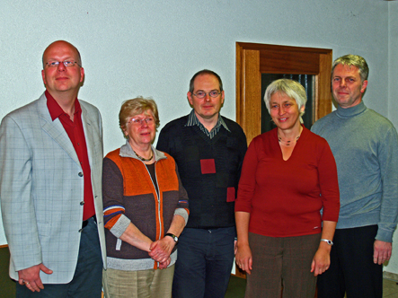
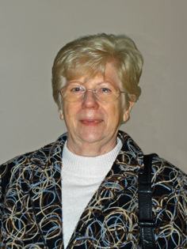
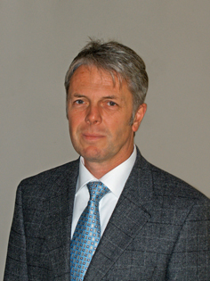
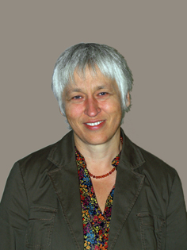
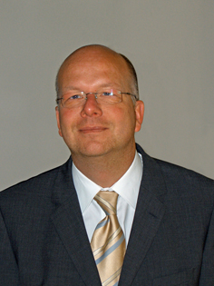

Lieselotte Adler |
 | ||
Engagement |
Kirchengemeinderätin seit 2007. | ||
Alter |
69 Jahre | ||
Motivation |
Ich bin Älteste geworden, weil ich in unserer Kirchengemeinde mitarbeiten möchte. Ich möchte in folgenden Bereichen etwas bewegen: Seniorenarbeit und Besuchsdienst. Kinder- und Jugendarbeit bei uns in der Gemeinde sind sehr wichtig, weil Kinder und Jugend die Zukunft unserer Gemeinde sind. | ||
Was mir zu folgenden Begriffen spontan einfällt... |
Gott: | unser aller Vater | |
| Glaube: | unser Glaubensbekenntnis | ||
| Kirchengemeinde: | Gemeinschaft aller Christen. | ||
Ein paar Worte, die mich beschreiben |
aktive Seniorin, seit 1963 in ökumenischer Ehe verheiratet, zwei erwachsene Kinder. | ||
|  | Dr. Udo Blaschke |
||
Alter |
47 Jahre, Kirchengemeinderat seit 2004. Zuständig für Haushalt und Finanzen. | ||
Engagement |
Kirchengemeinderat seit 2004. Zuständig für Haushalt und Finanzen. | ||
Motivation |
Ich bin Ältester geworden, weil ich mich am Auf- und Weiterbau unserer Gemeinde beteiligen, und unsere Gemeinde für alle Altersgruppen attraktiv mitgestalten möchte. Unsere Gemeinde ist in vielen Bereichen sehr aktiv. Diese Aktivitäten brauchen Räume zum Finden, zum Wachsen, zum Miteinander. Dafür werde ich mich einsetzen. Kinder- und Jugendarbeit bei uns in der Gemeinde hat einen hohen Stellenwert und dankenswerter Weise viele engagierte Mitarbeiter. Nicht ganz uneigennützig werde ich deren Arbeit sowie Aus- und Weiterbildung unterstützen. | ||
Was mir zu folgenden Begriffen spontan einfällt... |
Gott: | Er gibt mir Kraft, Er muss sich einiges von mir anhören, und immer wieder trägt er mich. | |
| Glaube: | Geborgenheit, Zweifel, Hoffnung, Fragen, JESUS. | ||
| Kirchengemeinde: | Wir wollen einladende Gemeinde sein und miteinander auf der Basis der christlichen Wertegemeinschaft leben. | ||
Ein paar Worte, die mich beschreiben |
Ich bin mit Andrea verheiratet und wir haben zwei Töchter, Sina (16) und Lisa (13). Beruflich bin ich als Biologe leiter von Forschungsprojekten. In meiner Freizeit kommt an erster Stelle meine Familie und wenn dann noch Zeit übrig ist, setze ich mich gerne aufs Trekkingrad oder ziehe die Wanderstiefel an. Auch im Thermalbad bin ich hin und wieder zu finden. | ||
Marita Dollinger |
 | ||
Alter |
52 Jahre | ||
Engagement |
Kirchengemeinderätin seit 2001. Zuständig für den Kindergarten. Außerdem in folgenden Gemeindebereichen aktiv: Kirchenmusik (Posaunenchor), Kinder- und Jugendarbeit, Besuchsdienst. |
||
Motivation |
Ich bin Älteste geworden, weil ich Verantwortung in meiner Gemeinde mittragen will. Weil ich Gemeinde mit bauen will, einladen etc. Ich möchte in folgenden Bereichen etwas bewegen: Elternarbeit, Kindergarten, Mission, Evangelisation. Kinder- und Jugendarbeit bei uns in der Gemeinde hat einen großen Stellenwert. Kinder und Jugendliche sind willkommen. | ||
Was mir zu folgenden Begriffen spontan einfällt... |
Gott: | Schöpfer, liebender Vater, allmächtig. | |
| Glaube: | Vertrauen, Geborgenheit, Gemeinschaft. | ||
| Kirchengemeinde: | Netz durch viele verschiedene Menschen, auf dem Weg mit Jesus. | ||
Ein paar Worte, die mich beschreiben |
ich bin kontaktfreudig; packe gerne mit an, wo es nötig ist. Ich organisiere gerne. Ich singe gerne und bin Waldhornspielerin. Jesus liebt mich und hält mich. | ||
|  | Stefan Grundt |
||
Alter |
38 Jahre | ||
Engagement |
Kirchengemeinderat seit 2007. Daneben bin ich in folgenden Gemeindebereichen aktiv: Kirchenmusik (Step by Step) und Gemeindebrief. | ||
Motivation |
Ich bin Ältester geworden, weil ich mich von Gott gebrauchen lassen will und in unserer Gemeinde Verantwortung übernehmen. Ich möchte in folgenden Bereichen etwas bewegen: in der jungen Erwachsenenarbeit und für Menschen meines Alters. Kinder- und Jugendarbeit bei uns in der Gemeinde sind positive und zukunftsträchtige Arbeitsbereiche, in denen gute, klasse Sachen passieren. | ||
Was mir zu folgenden Begriffen spontan einfällt... |
Gott: | Souverän, Liebe, durch Jesus mir nahe … | |
| Glaube: | ist Halt in meinem Leben | ||
| Kirchengemeinde: | Gott und Glaube gemeinsam erleben, Leid und Freud teilen. | ||
Ein paar Worte, die mich beschreiben |
„Normaler“ Enddreißiger, der offen ist für andere Menschen; bin gespannt auf neue Arbeitsaufgaben. | ||